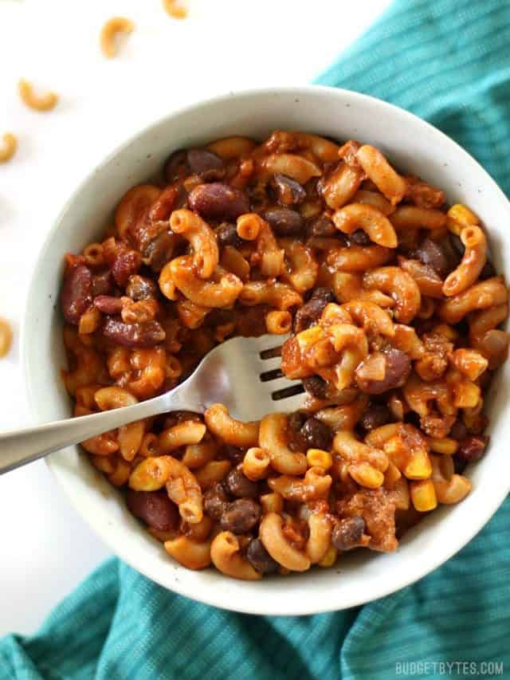

Return to Home
Chilli Bean Pasta Recipe

About this Recipe
This was one of my favourite meals when dieting - tasty and filling. If you're following Weight Watchers this
comes out at 5.5 points per serving. As long as you measure the oil and pasta, you can bulk it up with as much
veg as you like!
Ingredients
- Pasta or Spagetti
- Oil (I recommend Olive)
- Black Pepper
- Kidney Beans
- Chopped Tomatoes in a tin
Steps
- Cook the pasta for 10 minutes in boiling water on a simmer.
- Drain the pasta water.
- Cook the kidney beans on a low heat.
- Heat up the Chopped Tomatoes and mix everything together.